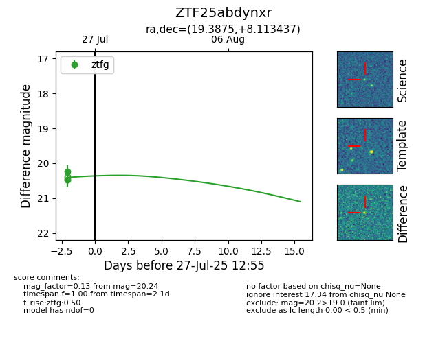

Target ZTF25abdynxr at 2025-07-27 12:55, see:
FINK: fink-portal.org/ZTF25abdynxr
Lasair: lasair-ztf.lsst.ac.uk/objects/ZTF25abdynxr
ALeRCE: alerce.online/object/ZTF25abdynxr
alt names
ZTF25abdynxr (ztf,fink)
coordinates:
equatorial (ra, dec) = (19.3875,+8.11344)
galactic (l, b) = (134.0239,-54.19499)
photometry
last ztfg=20.24
3 ztfg detections
